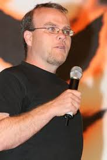
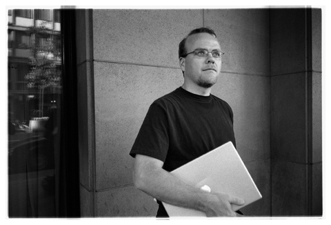

Rasmus Lerdorf é um programador canadiano-dinamarquês.
Ele é o autor da primeira versão da linguagem de programação PHP.
Rasmus foi co-autor das versões seguintes do PHP, juntamente com os israelitas fundadores da Zend Technologies, Andi Gutmans e Zeev Suraski.
Trabalhou de Setembro de 2002 a novembro de 2009 para a Yahoo!.
Em 2012 anunciou no Twitter que iria começar a trabalhar na Etsy.
Início da vida e educação
Formou-se na Escola Secundária King City em 1988 e, em 1993, formou-se na Universidade de Waterloo com um Bacharelado em Ciências Aplicadas em Design de Sistemas Engenharia.

Ele contribuiu para o Servidor Apache HTTP e ele adicionou a cláusula LIMIT ao SGBD MSQL.
Uma variante desta cláusula LIMIT já estava em torno de uma década em sistemas de gerenciamento de banco de dados relacionais mainframe (como o Oracle Rdb executado no VAX / VMS, anteriormente da Digital Equipment Corporation), mas, aparentemente, ainda não havia sido apanhado pelo PC- bancos de dados baseados.
Foi posteriormente adaptado por vários outros SGBD compatíveis com SQL. Ele lançou a primeira versão do PHP em 1995.
Carreira

De setembro de 2002 a novembro de 2009 Lerdorf foi empregado por Yahoo! Inc. como engenheiro de arquitetura de infraestrutura.
Em 2010, ele se juntou à WePay para desenvolver sua interface de programação de aplicativos. Ao longo de 2011 ele era um consultor roving para startups.
Em 22 de fevereiro de 2012, ele anunciou no Twitter que ele havia se juntado ao Etsy.Em julho de 2013, a Rasmus se juntou ao Jelastic como consultor sênior para ajudá-los na criação de novas tecnologias.
Lerdorf é um orador freqüente nas conferências Open Source em todo o mundo. Durante sua apresentação no OSCMS 2007, apresentou uma vulnerabilidade de segurança em cada um dos projetos representados na conferência naquele ano.
Lerdorf também apareceu na WeAreDevelopers Conference 2017, fazendo um discurso sobre a história do PHP e o novo lançamento do PHP 7 em 2017